Software house yang membantu Anda mengikuti perkembangan teknologi agar tidak tertinggal. Kemajuan teknologi tidak bisa dihindari — dan sekarang ada AI, yang seharusnya menjadi alat dan pendamping dalam bekerja & berbisnis: lebih mudah, lebih cepat. Bukan dihindari, bukan ditakuti.
Why NexWave Tech exists
| Aspect | Definition |
|---|---|
| Brand Essence | Gelombang teknologi yang mengantarkan — bukan menabrak — bisnis Anda. |
| Promise | Teknologi (termasuk AI) sebagai alat & pendamping kerja, bukan ancaman. Kami bantu adopsi yang tepat, bertahap, dan berdampak. |
| Personality | Modern · Terpercaya · Membumi (tidak jualan hype) · Progresif |
| Target Voice | ID: hangat & tegas, minim jargon · EN: clear, confident, plain-spoken |
| Tagline (opsional) | “Ride the wave of progress” / “Teknologi untuk maju, bukan takut” |
Pilih satu sebagai primary; sisanya varian. Semua tersedia SVG + PNG (1024px).
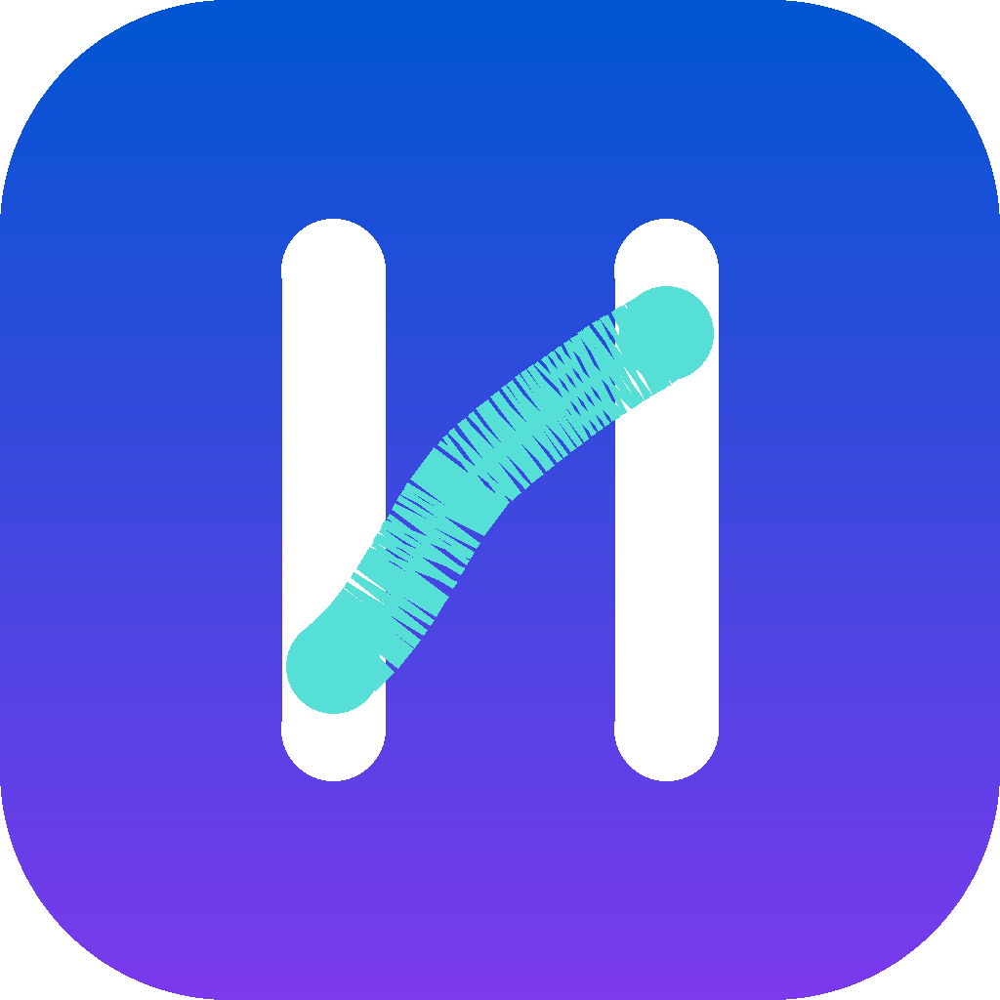
Dua pilar putih membentuk huruf N, garis cyan sebagai diagonal gelombang. Simbol gabungan N + gelombang. Paling kuat di ukuran kecil (favicon).
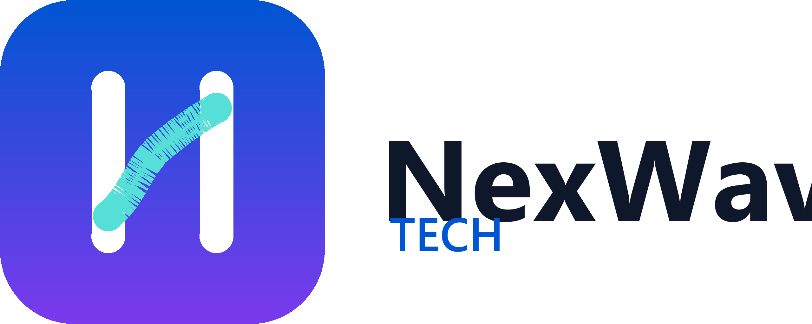
Kombinasi mark & teks “NexWave” + sub “TECH”. Untuk navbar, email signature, dokumen resmi.
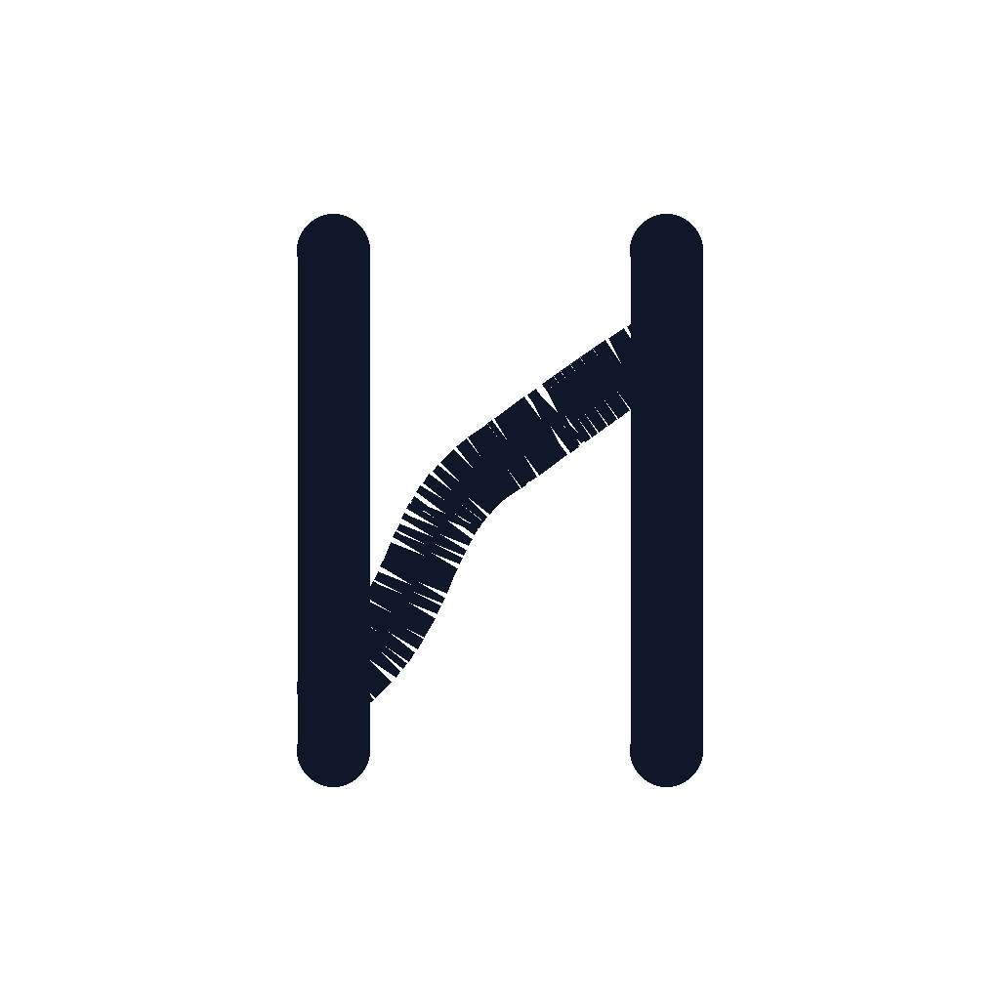
Versi garis tunggal navy. Penggunaan: cetak hitam-putih, invoice, stempel, emboss.
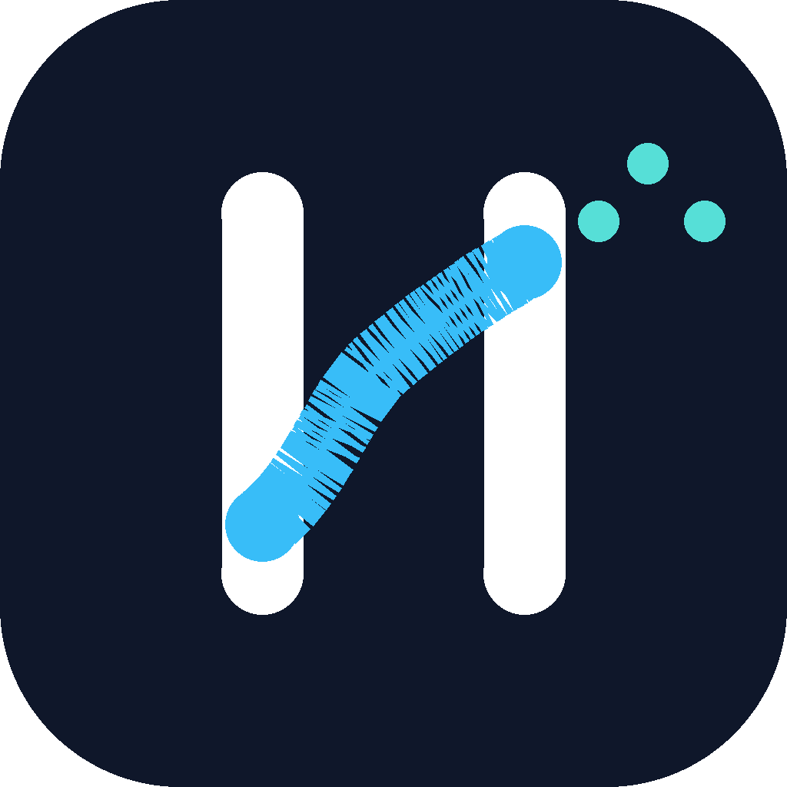
Tile navy dengan titik-titik “sinyal” — visualisasi data / AI tersebar. Untuk presentasi, slide gelap, merchandise gelap.
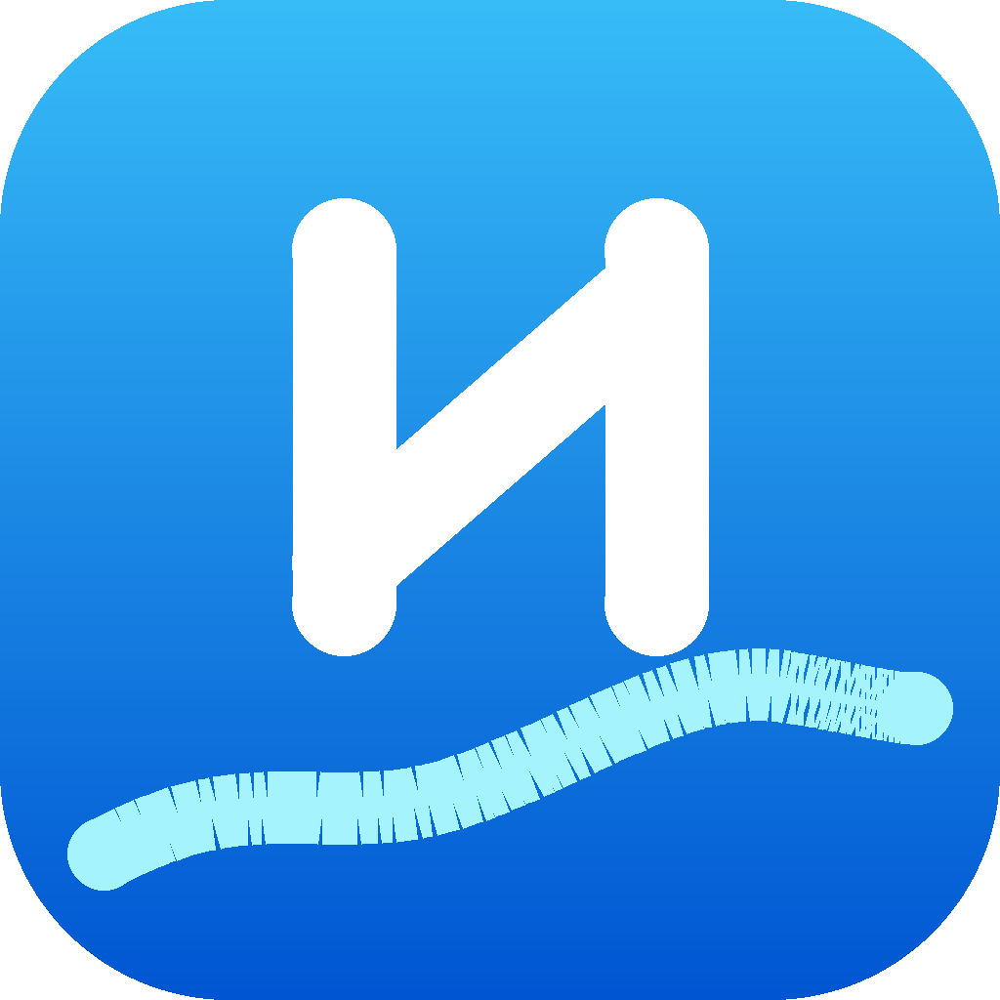
N agresif-modern (garis diagonal tegas), gelombang rendah sebagai alas. Kesan software house yang dinamis & berkembang.
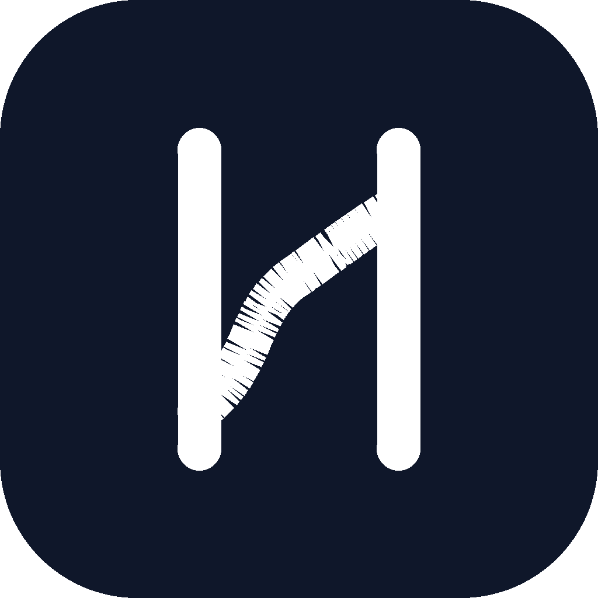
logo-3w & logo-2w untuk background gelap (footer, slide).
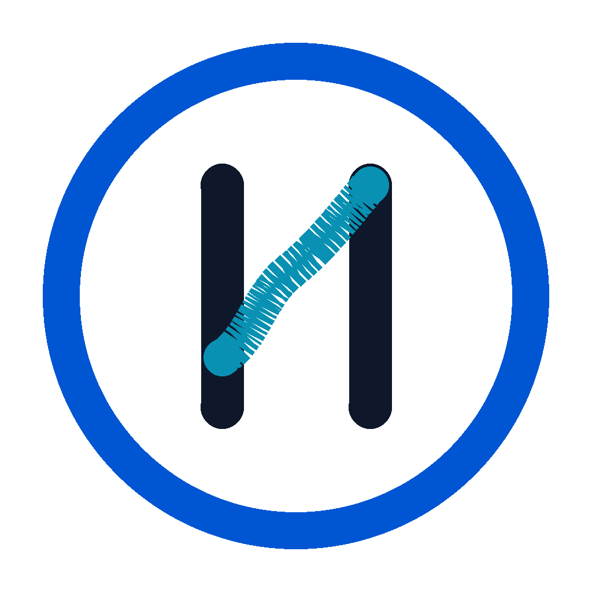
Lingkaran outline biru + N navy monoline. Kesan komunitas/tech circle. Bagus untuk avatar & badge.
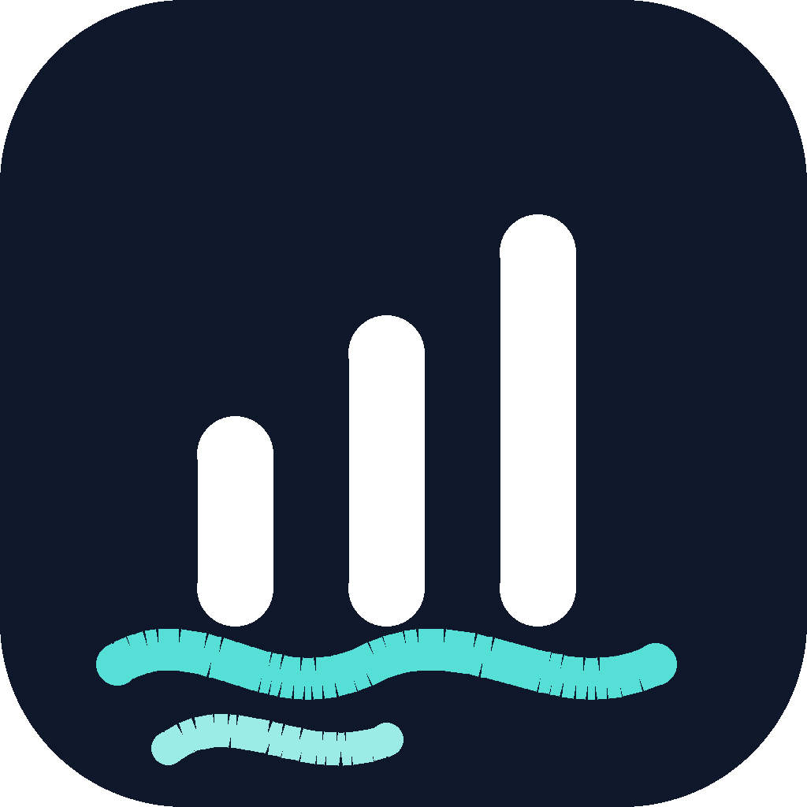
Bar putih menaik (pertumbuhan/naik kelas) di tile navy, gelombang cyan di dasar. Pesan: bisnis makin maju.
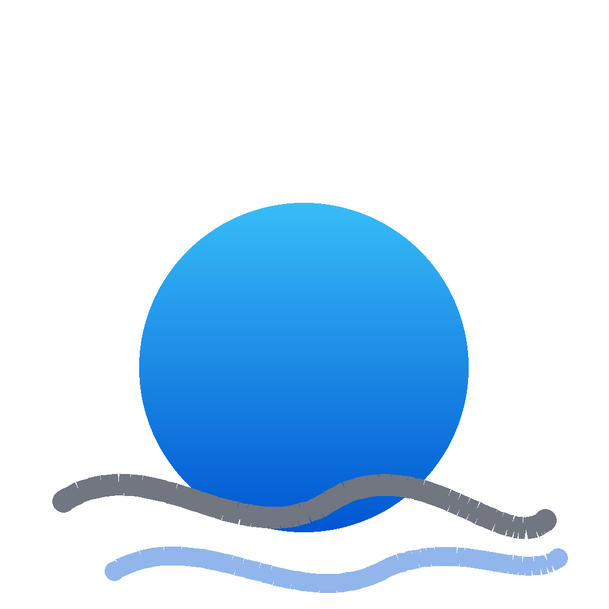
“Matahari terbit” gradasi sky→blue di atas gelombang. Metafora: teknologi mengangkat bisnis, bukan menenggelamkan.
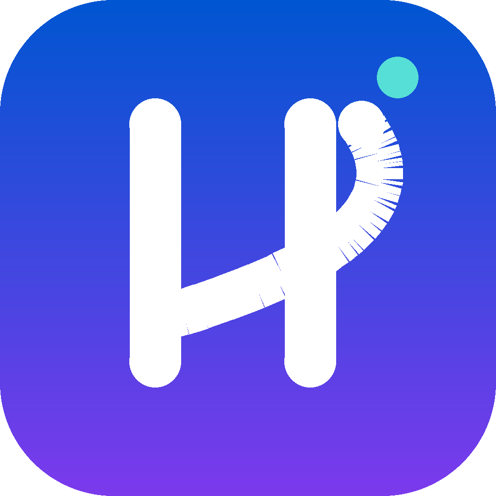
N + lengkung swoosh meluncur ke kanan-atas + titik komet cyan. Arah maju, momentum, tidak tertinggal.
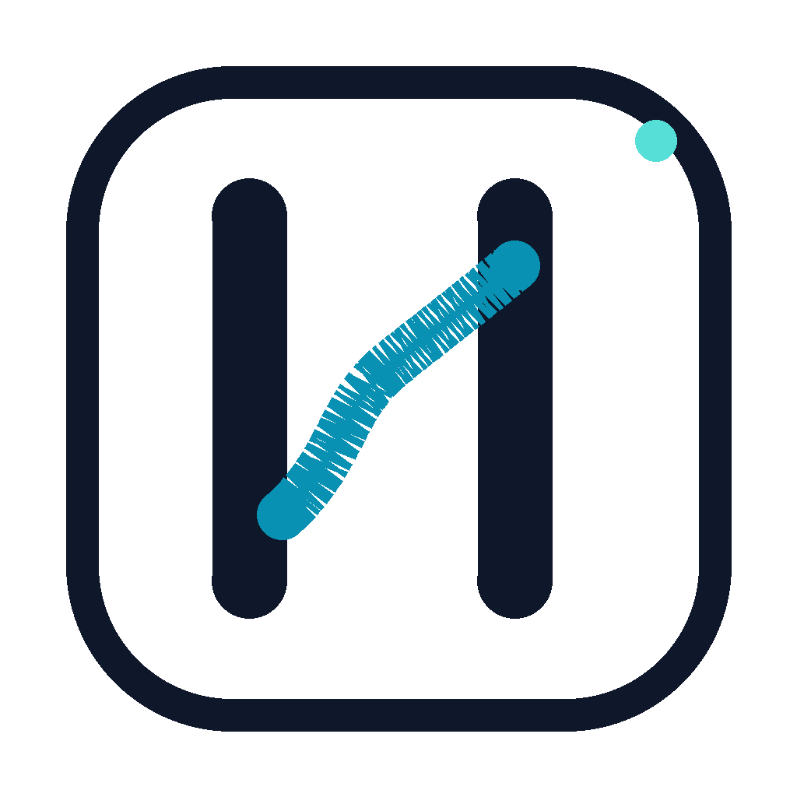
Kotak outline navy tipis + N & gelombang teal. Minimalis, cocok untuk dokumen/cetak ringan & UI clean.
Rekomendasi penerapan
Lockup utama (light background) — logo-2.svg / logo-2.png
Gunakan mark saja: logo-1 (atau mark favorit Anda). Jangan wordmark — terlalu kecil.
Navbar: logo-2. Footer gelap: logo-2w.
logo-3 navy atau logo-3w putih. Hindari gradasi bila hanya 1 warna.
logo-4 untuk kontras tinggi di media sosial & deck gelap.
Primary blue = kepercayaan & profesional · Cyan accent = gelombang/energi · Violet = AI/kreativitas
Gradasi signature: 135deg #0056D2 → #7C3AED (tile logo) & #38BDF8 → #0056D2 (konsep 5). Cyan hanya sebagai aksen tipis di atas primary — jangan dominan.
Inter = font utama seluruh produk & materi
| Role | Font / Weight | Penggunaan |
|---|---|---|
| Display | Inter ExtraBold 800 | Judul utama, angka hero |
| Heading | Inter Bold 700 / SemiBold 600 | Section header, card title |
| Body | Inter Regular 400 / Medium 500 | Paragraf, UI |
| Label | Inter SemiBold 600, letter-spacing besar | Badge, “TECH” sub-label, tombol kecil |
Fallback: 'Segoe UI', Arial, sans-serif. Dalam logo, teks tidak perlu di-trace — pakai font Inter langsung agar konsisten.
Sesuai positioning: AI = alat & pendamping, bukan ancaman
“Teknologi biar kerja lebih mudah & cepat — kami dampingi dari langkah pertama.” · “AI sebagai partner kerja Anda.” · “Tidak perlu takut tertinggal — kami yang jaga Anda tetap relevan.”
Bahasa menakut-nakuti (“ganti karyawan dengan AI”), hype berlebihan (“AI ajaib instan”), jargon mentah tanpa konteks.
Tagline alternatif: “Right technology for real problems” (sudah dipakai di hero portfolio) tetap valid sebagai tagline utama.
Jaga clear space ≥ 1× tinggi mark di sekeliling logo. Gunakan varian sesuai permukaan (light/dark/mono).
Jangan ubah proporsi, rotasi, atau warna. Jangan taruh di atas foto ramai. Jangan repot warna gradasi saat 1 warna saja.
Jangan rekonstruksi logo dari teks font — selalu pakai file SVG/PNG dari folder brand/logos/.
| File | Format | Pakai untuk |
|---|---|---|
logo-1.svg / .png | Mark + gradasi tile | Favicon, app icon, avatar |
logo-2.svg / .png | Mark + wordmark (light) | Navbar, signature, dokumen |
logo-2w.svg / .png | Mark + wordmark (white) | Footer & permukaan gelap |
logo-3.svg / .png | Monoline navy | Cetak mono, invoice |
logo-3w.svg / .png | Monoline putih | Cetak putih / gelap |
logo-4.svg / .png | Dark tile + signal dots | OG image, slide gelap |
logo-5.svg / .png | Angular N + wave base | Alternatif modern |
logo-6.svg / .png | Ring badge monoline | Avatar, badge, circle icon |
logo-7.svg / .png | Growth bars + wave | Pesan pertumbuhan / progress |
logo-8.svg / .png | Rising bubble + waves | Teknologi mengangkat bisnis |
logo-9.svg / .png | Swoosh momentum + dot | Momentum / arah maju |
logo-10.svg / .png | Outline frame minimal | UI clean, cetak ringan |
render2.py | Script | Regenerate PNG konsep 6-10 |
render.py | Script | Regenerate semua PNG/OG |